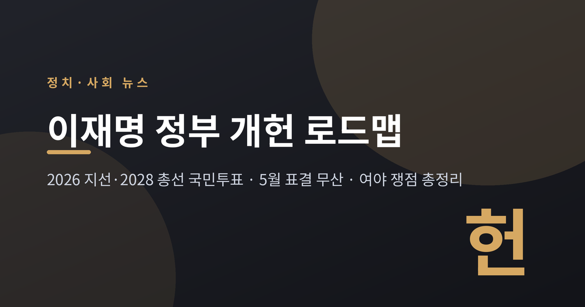
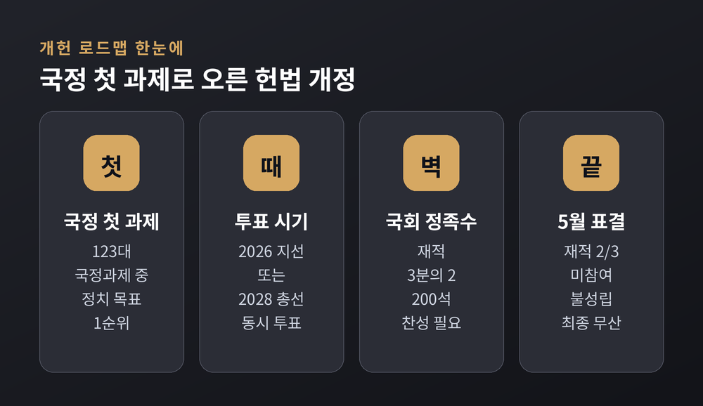
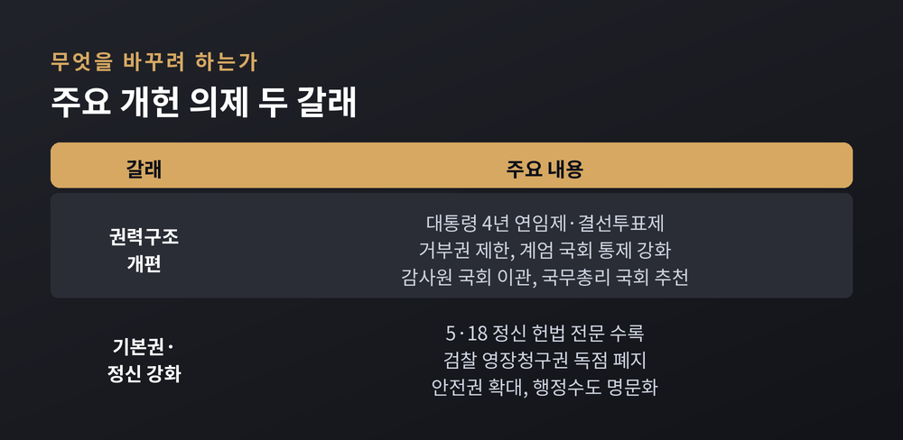
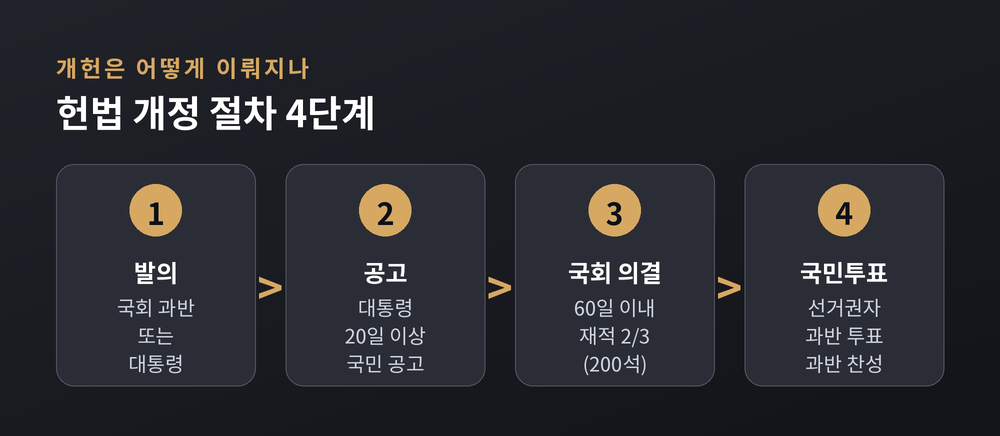
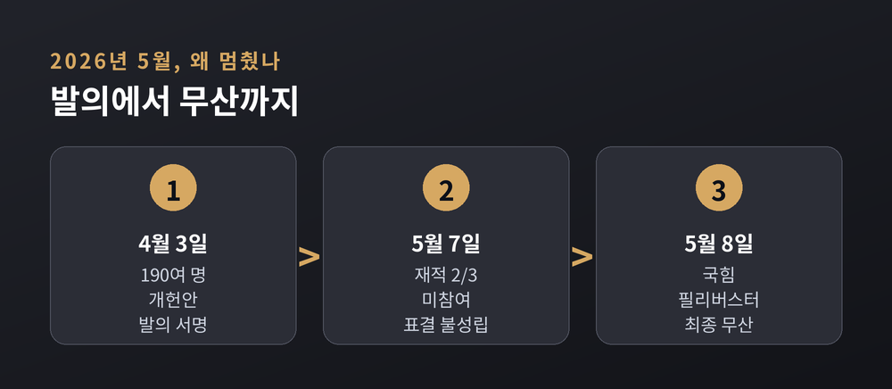
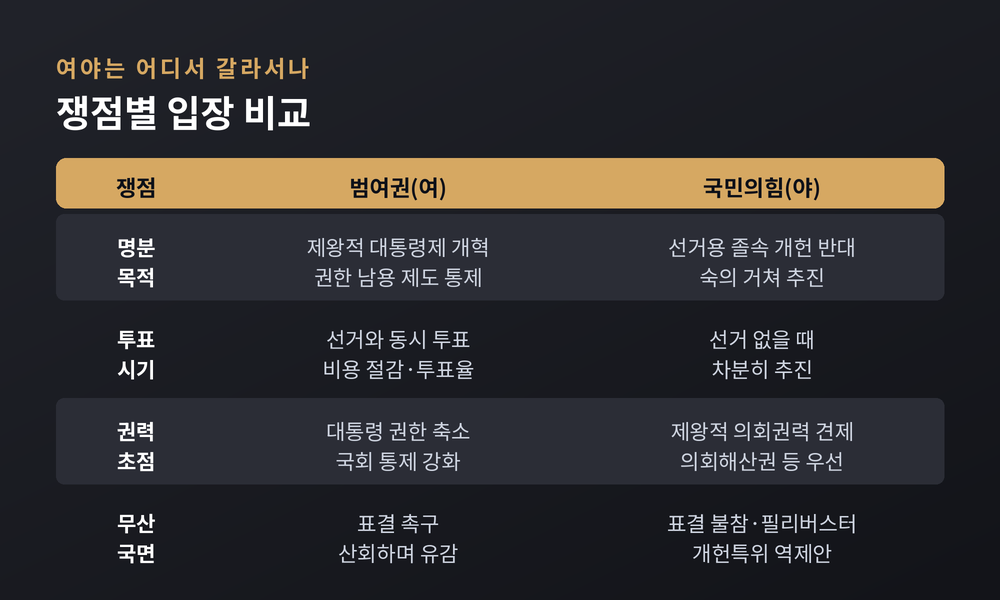

이재명 정부 개헌 로드맵, 2026 지선·2028 총선 국민투표 쟁점 정리
이번 글에서는 이재명 정부가 국정 첫 과제로 내건 헌법 개정(개헌) 로드맵을 정리해 보겠습니다. 무엇을 바꾸려 하는지, 2026년 5월 표결은 왜 무산됐는지, 여야는 어디서 갈라서는지 차분히 짚어보려 합니다. 특정 진영의 손을 들어주기보다, 사실과 양측 입장을 나란히 놓는 데 무게를 둡니다.

무슨 일이 있었나
정부가 5년의 국정 방향을 담은 밑그림을 내놓았습니다. 국정기획위원회가 마련한 '국정운영 5개년 계획'입니다. 여기에는 123개의 국정과제가 담겼습니다.
눈에 띄는 대목은 순서입니다. 다섯 개의 국정목표 가운데 첫째가 '국민이 하나되는 정치'였고, 그 핵심 실천 과제로 헌법 개정이 올라왔습니다. 국정 청사진의 맨 앞자리에 개헌을 둔 셈입니다.
방식도 구체적입니다. 2026년 지방선거 또는 2028년 국회의원 선거와 같은 날, 개헌 찬반 국민투표를 함께 치르자는 제안입니다. 별도 투표에 드는 비용을 줄이고 투표율을 끌어올릴 수 있다는 계산이 깔려 있습니다.
이 정부는 조기 대선을 거쳐 인수위원회 없이 출범했습니다. 출범 약 70일 만에 5개년 계획을 내놓았고, 그 앞머리에 개헌을 세웠습니다. 국정의 방향을 '헌법을 다시 쓰는 일'에서 시작하겠다는 신호로 읽힙니다. 이재명 대통령은 후보 시절부터 4년 연임제와 결선투표제 도입을 언급하며 개헌 논의를 본격화하자고 제안한 바 있습니다.

무엇을 바꾸려 하는가
개헌 의제는 크게 두 갈래입니다. 하나는 권력의 구조를 다시 짜는 일, 다른 하나는 기본권과 헌법정신을 넓히는 일입니다.
권력구조 쪽이 무겁습니다. 대통령 임기를 현행 5년 단임에서 4년 연임제로 바꾸고, 결선투표제를 도입하자는 안이 중심에 있습니다. 대통령의 거부권은 제한하고, 비상계엄이나 긴급명령을 선포할 때는 국회의 통제를 강화합니다. 국회의 '계엄해제요구권'을 한 단계 높여 '계엄해제권'으로 격상하는 내용도 들어 있습니다. 감사원을 국회 소속으로 옮기고, 국무총리를 국회가 추천하도록 하자는 제안도 포함됐습니다.
권력구조 개편의 배경에는 지난 비상계엄 사태가 있습니다. 대통령이 계엄을 선포하는 문턱을 국회 동의로 높이고, 국회가 계엄을 스스로 풀 수 있도록 권한을 격상하려는 것입니다. 대통령 한 사람에게 쏠린 힘을 여러 갈래로 나누자는 흐름입니다.
기본권 쪽도 상징이 큽니다. 헌법 전문에 5·18 광주민주화운동 정신을 담고, 검찰이 독점해 온 영장청구권을 손보자는 내용입니다. 안전권 같은 기본권을 넓히고, 행정수도를 헌법에 명문화하는 방안도 논의 대상에 올랐습니다.
예전 개헌 논의가 권력구조 한 축에 머물렀다면, 지금은 기본권과 지방분권까지 폭을 넓힌 점이 다릅니다. 그만큼 다뤄야 할 쟁점이 많고, 합의의 문턱도 높습니다.

개헌은 어떻게 이뤄지나
절차를 알아야 이번 무산의 의미가 보입니다. 헌법 개정은 네 단계를 밟습니다.
먼저 국회 재적 과반수 또는 대통령이 개정안을 발의합니다. 이어 대통령이 20일 이상 국민에게 공고합니다. 그다음 국회가 공고일부터 60일 안에 의결하는데, 여기서 재적의원 3분의 2 이상의 찬성이 필요합니다. 마지막으로 국민투표에 부쳐 선거권자 과반수가 투표하고, 그 과반수가 찬성하면 확정됩니다.
관건은 국회 문턱입니다. 재적 300석 기준으로 200석의 동의가 있어야 합니다. 범여권 의석만으로는 이 선을 넘기 어렵습니다. 결국 100여 석을 가진 국민의힘의 협조가 사실상 필수라는 뜻입니다. 이 구조가 이번 개헌이 멈춰 선 근본 배경입니다.

2026년 5월, 표결은 왜 무산됐나
시간을 따라가 보겠습니다. 2026년 4월 3일, 더불어민주당 160명 전원을 비롯해 조국혁신당·진보당·개혁신당 등 190명 안팎의 의원이 우원식 국회의장과 함께 개헌안 발의에 서명했습니다.
발의된 안에는 계엄 선포에 국회 동의를 요구하고, 5·18과 부마민주항쟁 정신을 헌법 전문에 담는 내용이 담겼습니다.
그러나 5월 7일 국회 본회의 표결은 성립하지 못했습니다. 재적 3분의 2가 참여하지 않았기 때문입니다. 국민의힘은 표결에 참여하지 않았습니다.
이튿날인 5월 8일, 우 의장은 오후 재표결을 예고했습니다. 하지만 국민의힘이 개헌안은 물론 50여 개 비쟁점 민생법안까지 필리버스터를 신청하자, 우 의장은 재표결을 상정하지 않겠다고 밝혔습니다. 그렇게 개헌 시도는 최종 무산됐습니다. 6·3 지방선거와 동시에 치르려던 국민투표도 함께 무산됐습니다.
우 의장은 산회를 선포하며 눈물을 보였습니다. "공당으로서 국민께 한 약속을 걷어찼다"는 말로 유감을 표했습니다.
현행 헌법은 1987년에 만들어졌습니다. 언론은 이번 시도를 두고 '39년 만의 개헌 문턱'이라 불렀습니다. 그만큼 국회 문 앞에서 멈춰 선 무게도 가볍지 않았습니다.

여야는 어디서 갈라서는가
같은 사안을 두고 두 진영의 시선은 크게 다릅니다.
범여권은 1987년 헌법 체제의 '제왕적 대통령제'를 손볼 때가 됐다고 봅니다. 특히 지난 비상계엄 사태에서 드러난 대통령 권한의 남용을 제도로 막아야 한다는 명분을 내세웁니다. 선거와 국민투표를 함께 치르면 비용을 아끼고 참여도 높다는 논리도 폅니다.
국민의힘의 반대 지점은 결이 다릅니다. 개헌 내용 자체를 거부하는 것이 아니라 '선거용 졸속 개헌'에 반대한다는 입장입니다. 선거가 없을 때 차분히 국민의 뜻을 모아 추진하자는 것입니다. 22대 국회 후반기에 여야가 개헌특별위원회를 꾸려 전문부터 권력구조까지 폭넓게 논의하자고 역제안했습니다. 나경원 의원 등은 이번 안이 예산·입법권이 국회에 쏠린 '제왕적 의회 권력구조' 문제를 비켜갔다며, 의회를 견제할 장치부터 논의하자고 맞섰습니다.
한쪽은 대통령 권한 축소에, 다른 한쪽은 의회 권력 견제에 방점을 찍습니다. 필요성에는 공감하면서도, 방향이 어긋나 있는 셈입니다. 여기에 시기와 절차를 둘러싼 셈법까지 겹치면서, 합의점은 좀처럼 좁혀지지 않고 있습니다.

정리하면 이렇습니다. 개헌은 국정의 첫 과제로 올랐지만, 국회 3분의 2라는 벽 앞에서 멈춰 섰습니다. 남은 선택지는 2028년 총선과의 동시 투표, 혹은 별도 시점의 재추진으로 좁혀졌습니다.
지방선거 동시 투표가 무산된 만큼, 현실적 선택지는 좁아졌습니다. 2028년 총선과 함께 묻거나, 선거와 떼어 별도 시점에 다시 시도하는 길입니다. 어느 쪽이든 야당의 협조라는 산을 넘어야 합니다. 시민사회 일각에서는 국회 협상에만 기대지 말고 국민 참여형 논의로 매듭을 풀자는 목소리도 나옵니다.
여야 모두 "고칠 때가 됐다"는 데는 고개를 끄덕입니다. 갈리는 것은 무엇을, 언제, 어떻게 바꾸느냐입니다.
— 결국 개헌의 성패는 조문의 완성도가 아니라, 서로 다른 손을 마주 잡을 수 있느냐에 달려 있는지도 모릅니다.